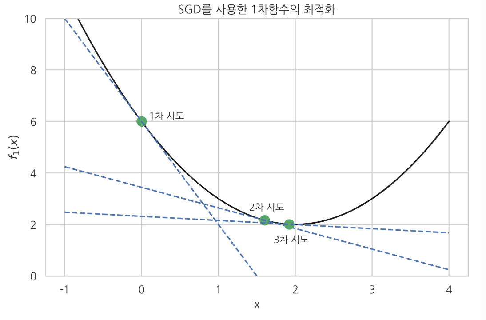
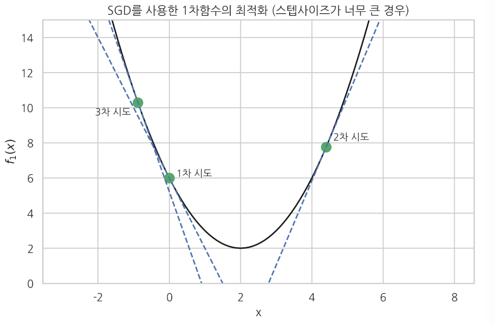
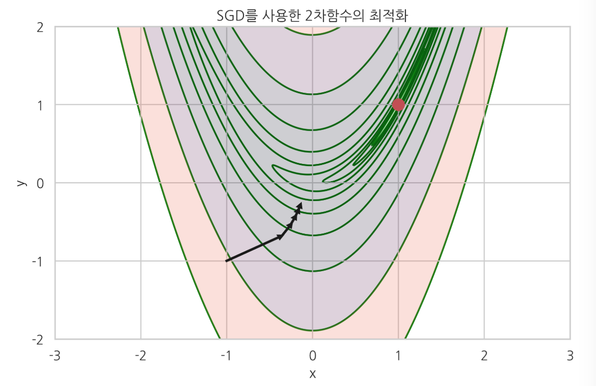
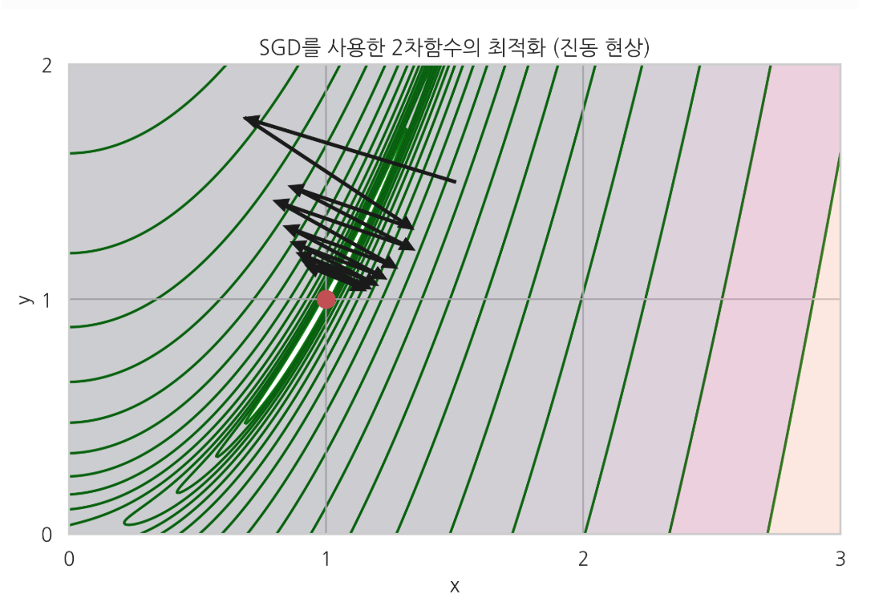
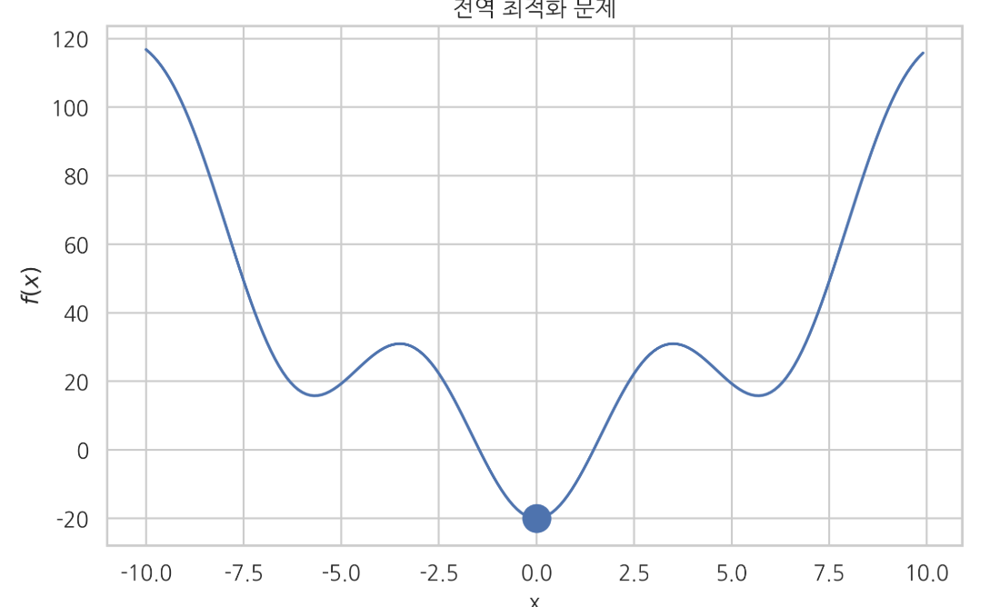
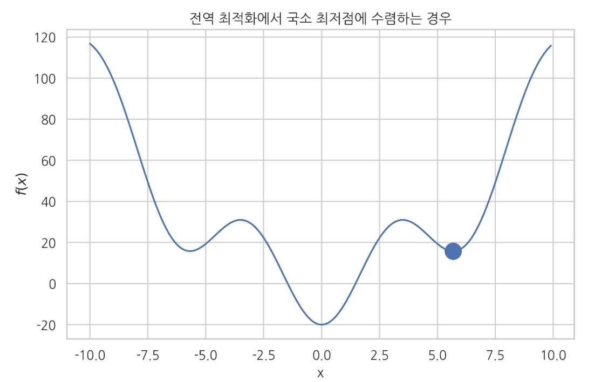

최적화 기초
Summary
- 그리드서치(grid search)는 가능한 x의 값을 여러개 넣어보고 그 중 가장 작은 값을 선택
- 기울기가 0이고 2차도함수가 양수이면 최소점이다. 반대로 기울기가 0이고 2차 도함수가 음수이면 최대점이 된다
- 수치적최적화(numerical optimization)은 반복적시행착오(trial and error)을 통해 함수 위치가 최적점이 될 때까지 가능한 한 적은 횟수만큼 x위치를 옮기는 방법이다.
- SGD(Steepest Gradient Descent)는 현재 위치에서 기울기 값만을 이용하여 다음 위치를 결정하는 방법이다. 이 때 위치를 옮기를 거리를 결정하는 비례상수를 스텝사이즈라고 한다.
- Newton 방법은 목적함수가 2차 함수라는 가정하에 한번에 최적점을 찾는 방법이다. 그레디언트 벡터에 헤시안 행렬의 역행렬을 곱해서 방향과 거리가 변형된 그레디언트 벡터를 사용한다.
- 만약 최적화하려는 함수가 복수의 국소 최저점(local minima)을 가지고 있는 경우에는 수치적 최적화 방법으로 전역 최저점(global minimum)에 도달한다는 보장이 없다.
- 목적함수의 2차 도함수의 값이 항상 0 이상이 되는 영역에서만 정의된 최적화 문제를 컨벡스(convex) 문제라고 한다. 컨벡스 문제에는 항상 전역 최저점이 존재한다.
최적화 문제
최적화 문제는 함수 의 값을 최대화 혹은 최소화하는 변수 의 값 를 찾는 것이다.
이 값 를 최적화 문제의 해(solution)라고 한다.
최대화 문제는 를 로 바꾸면 풀 수 있으므로 보통 최소화의 경우만 고려한다.
최소화 하고자 하는 함수 를 목적함수(objective function), 비용함수(cost function) 또는 손실함수(loss function) 등으로 부른다. 기호는 각각 로 표기하는 경우가 많다.
그리드 서치와 수치적 최적화
목적함수의 값을 가장 작게 하는 𝑥 위치를 찾는 최적화 문제를 푸는 가장 간단한 방법은 가능한 𝑥의 값을 여러개 넣어 보고 그 중 가장 작은 값을 선택하는 그리드 서치(grid search) 방법이다.
함수 의 그래프를 그려 최저점을 찾은 방법도 그리드 서치 방법의 일종이다. 그리드 서치는 가장 간단한 방법이지만 많은 𝑥 위치에 대해 목적함수 값을 계산해야 한다.
예측 모형을 만들 때 목적함수 값, 즉 예측 오차를 구하려면 모든 트레이닝 데이터 집합에 대해 예측 값과 타겟 값의 차이를 구해야 하므로 상당히 많은 계산량을 요구한다.따라서 그리드 서치보다 목적함수 계산을 적게 할 수 있는 방법이 필요하다.
반복적 시행 착오(trial and error)에 의해 최적화 필요조건을 만족하는 값 를 찾는 방법을 수치적 최적화(numerical optimization)라고 한다. 수치적 최적화 방법은 함수 위치가 최적점이 될 때까지 가능한 한 적은 횟수만큼 𝑥위치를 옮기는 방법을 말한다.
- 수치적 최적화 방법은 다음 두 가지 알고리즘을 요구한다.
- 현재 위치 가 최적점인지 판단하는 알고리즘
- 어떤 위치 를 시도한 뒤, 다음 번에 시도할 위치 을 찾는 알고리즘
기울기 필요조건
어떤 독립 변수 값 가 최소점이 되기 위해서는 일단 다음과 같이 값 에서 함수의 기울기(slope), 도함수 의 값이 0이라는 조건을 만족해야 한다. 이를 기울기 필요조건이라고 한다.
- 단일 변수에 대한 함수인 경우, 미분값이 0 ,
- 다변수 함수인 경우 모든 변수에 대한 편미분값이 0
즉 이 때 그레디언트(gradient) 벡터 를 라는 기호로 간단하게 나타내기도 한다.
이 조건을 필요조건이라고 하는 이유는 기울기가 0이라고 반드시 최소점이 되지는 않지만, 모든 최소점은 기울기가 0이기 때문이다. 일반적인 수치적 최적화 알고리즘에서는 기울기 필요조건을 이용하여 최적점에 도달하였는지 판단한다.
기울기가 0이어도 최소점이 아니라 최고점일 수도 있다. 기울기가 0인 위치가 최소점임을 확인하기 위해서는 2차 도함수의 부호도 계산해야 한다. 기울기가 0이고 2차도함수가 양수이면 최소점이다. 반대로 기울기가 0이고 2차 도함수가 음수이면 최대점이 된다.
최급강하법(SGD)
최급강하법(SGD; Steepest Gradient Descent) 방법 은 단순히 현재 위치 에서의 기울기 값 만을 이용하여 다음번 위치 를 결정하는 방법이다.
만약 현재 위치 에서 기울기가 음수이면 즉 곡면이 아래로 향하면 이므로 앞으로 진행하고 현재 위치 에서 기울기가 양수이면 이므로 뒤로 진행하게 되어 점점 낮은 위치로 옮겨간다.
가 일단 최적 점에 도달하였을 때는 이 되므로 더 이상 위치를 옮기지 않는다.
이 때 위치를 옮기는 거리를 결정하는 비례상수 𝜇를 스텝 사이즈(step size)라고 한다.
예로 1차원 목적함수()를 최급강하법으로 최적화하면 다음과 같다. 우선 사람이 직접 목적함수를 미분하여 도함수를 파이썬으로 구현해야 한다.
def f1d(x):
"""derivative of f1(x)"""
return 2 * (x - 2.0)
- x = 0 에서 시작하여 SGD로 최적점을 찾아나가는 과정은 아래와 같다.
- SGD에서는 스텝사이즈의 크기를 적절히 조정하는 것이 중요하다.


2차원 Rosenbrock 함수에 대해 SGD를 적용해보자. 목적함수를 미분하여 도함수를 구한 다음 그레디언트 벡터를 파이썬 함수로 구현하였다.
def f2g(x, y):
"""gradient of f2(x, y)"""
return np.array((2.0 * (x - 1) - 400.0 * x * (y - x**2), 200.0 * (y - x**2)))
다음 그림에 에서 시작하여 SGD로 최적점을 찾아나가는 과정을 그레디언트 벡터 화살표와 함께 보였다.

다음 그림에서 볼 수 있듯이 SGD 방법은 곡면의 모양이 계곡(valley)과 같이 생긴 경우, 즉 그레디언트 벡터가 최저점을 가리키고 있지 않는 경우에는 진동(oscillation) 현상이 발생한다. 따라서 수렴하는데 시간이 오래 걸릴 수 있다.

이러한 진동 현상을 없앨 수 있는 방법으로는 2차 도함수, 즉 헤시안 행렬을 이용하는 방법이나 모멘텀 방법(momentum)이 있다. 일반적인 경우에는 2차 도함수를 이용하는 방법을 사용하고 2차 도함수를 계산하기 어려운 인공신경망 등에서는 모멘텀 방법을 선호한다.
Normal Equation
Gradient Descent는 경사면을 하강하면서 최저점을 찾는 방식이기에 한걸음씩 내려오면서 여러번을 수행하게 된다.
Normal Equationd은 반복없이 를 바로 구하는 방법이다. 반복이 없기에 그만큼 빠르고 를 찾을 필요가 없다.
2차 도함수를 사용한 Newton 방법
Newton 방법 은 목적함수가 2차 함수라는 가정하에 한번에 최저점을 찾는 방법이다.
그레디언트 벡터에 헤시안 행렬의 역행렬을 곱해서 방향과 거리가 변형된 그레디언트 벡터를 사용한다.
예를 들어 다음 단변수 2차 함수 는 에서 최소값을 가진다.
단변수함수 Newton 방법은 다음과 같다. 즉 최적의 스텝사이즈가 이라는 것을 보여준다.
는 그레디언트벡터, 는 헤시안행렬
2차 함수에 대해 도함수와 2차 도함수는 아래와 같다.
Newton 방법에 적용하면 어떤 점 에서 시작해도 바로 최저점으로 이동한다.
Quasi_Newton 방법
Newton 방법은 목적함수가 2차 함수와 비슷한 모양을 가진 경우에 빠르게 수렴할 수 있다는 장점이 있지만 2차도함수인 헤시안 행렬 함수를 사람이 미리 구현해 주어야 하고 함수의 모양에 따라서는 잘 수렴하지 않을 수도 있다. Quasi-Newton 방법에서는 사람이 구한 헤시안 행렬 함수를 사용하는 대신 현재 시도하고 있는 주변의 몇몇 점에서 함수의 값을 구하고 이를 이용하여 2차 도함수의 근사값 혹은 이에 상응하는 정보를 수치적으로 계산한다. 실제로는 BFGS(Broyden–Fletcher–Goldfarb–Shanno) 방법이 많이 사용된다.
CG(conjugated gradient) 방법은 Quasi-Newton 방법처럼 헤시안 행렬을 필요로 하지 않고 변형된 그레디언트 벡터를 바로 계산한다.
SciPy를 이용한 최적화
SciPy의 optimize 서브 패키지는 최적화 명령 minimize를 제공한다. 세부적인 알고리즘은 method 인수로 선택할 수 있다. 디폴트 알고리즘은 앞에서 설명한 BFGS 방법이다. minimize 명령은 최적화하고자 하는 함수와 최적화를 시작할 초기값을 인수로 받는다. 보다 자세한 내용은 SciPy 문서를 참조한다.
result = minimize(func, x0, jac=jac)
func: 목적함수
x0: 초기값 벡터
jac: (옵션) 그레디언트 벡터를 출력하는 함수
minimize 명령의 결과는 OptimizeResult 클래스 객체로 다음 속성을 가진다.
x: 최적화 해success: 최적화에 성공하면True를 반환status: 종료 상태. 최적화에 성공하면 0을 반환message: 메세지 문자열fun: x 위치에서의 함수의 값jac: x 위치에서의 자코비안(그레디언트) 벡터의 값hess_inv: x 위치에서의 헤시안 행렬의 역행렬의 값nfev: 목적함수 호출 횟수njev: 자코비안 계산 횟수nhev: 헤시안 계산 횟수nit: x 이동 횟수- 함수 호출 계산량을 줄이기 위해서는 사람이 직접 그레디언트 벡터 값을 반환하는 함수를 만들어
jac인수로 넣어주면 된다. - 다변수 함수를 최적화하는 경우에는 목적함수가 벡터 인수를 가져야 한다.
전역 최적화 문제
만약 최적화하려는 함수가 복수의 국소 최저점(local minima)을 가지고 있는 경우에는 수치적 최적화 방법으로 전역 최저점(global minimum)에 도달한다는 보장이 없다. 결과는 초기 추정값 및 알고리즘, 파라미터 등에 의존한다.


컨벡스 문제
목적함수의 2차 도함수의 값이 항상 0 이상이 되는 영역에서만 정의된 최적화 문제를 컨벡스(convex) 문제라고 한다.
다변수 목적함수의 경우에는 주어진 영역에서 헤시안 행렬이 항상 양의 준정부호(positive semidefinite)이라는 조건이 된다.
convex 문제에서는 유일한 전역 최저점이 존재한다.